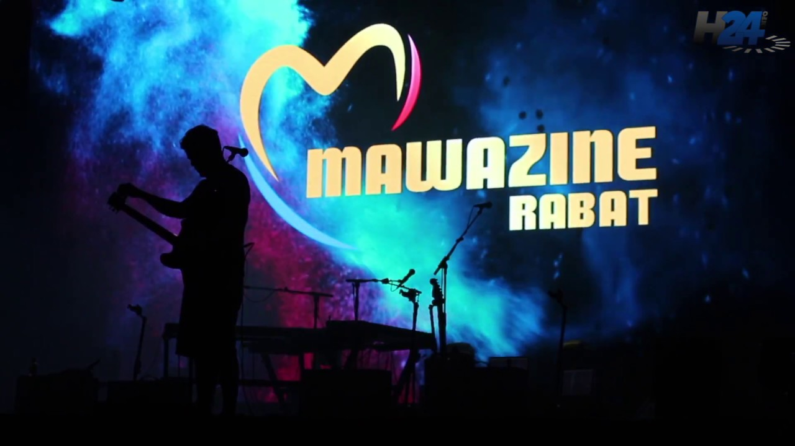
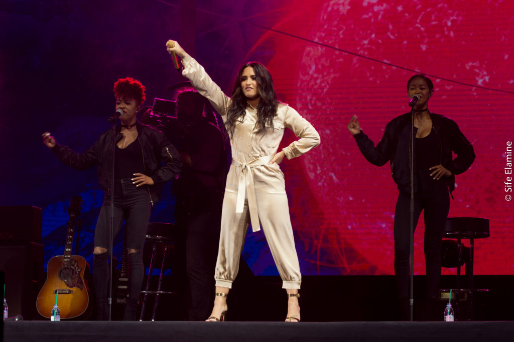
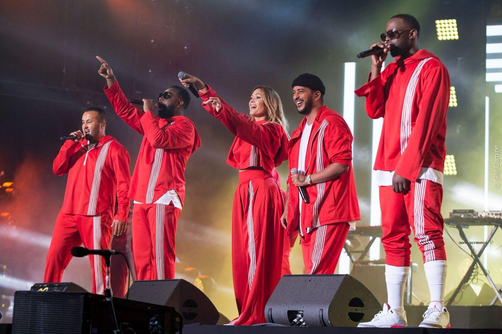
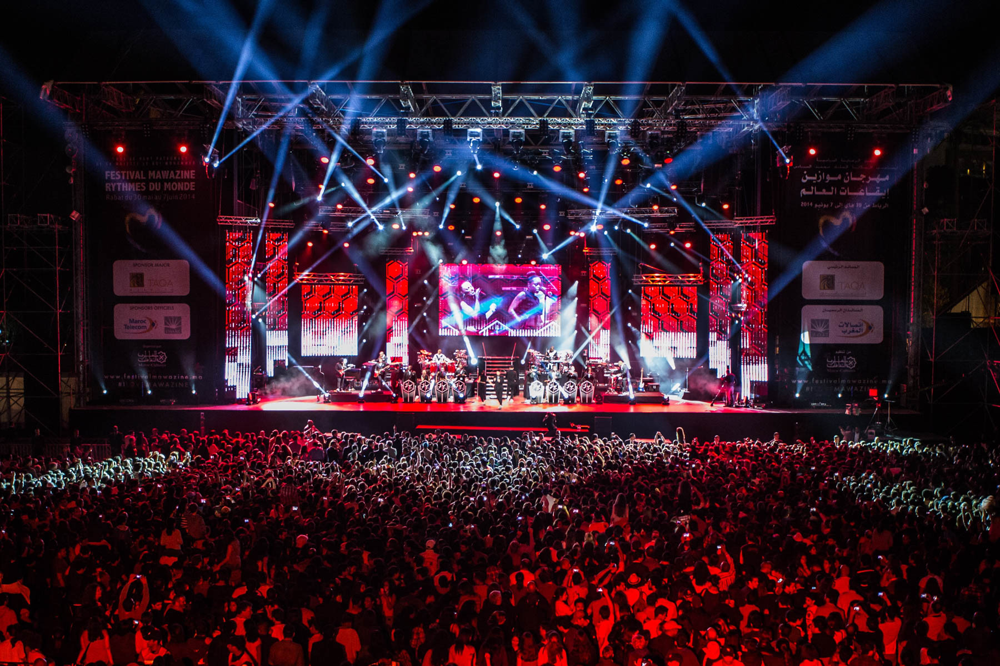

MAWAZINE
|
Le Festival Mawazine est organisé depuis 2001 par l'association Maroc Cultures2 sous le haut patronage de sa majesté le souverain Mohamed VI. Il a pour but de définir les différentes musiques de la planète verte et encore pour faire découvrir au public marocain les différentes cultures musicales de la planète à travers une programmation qui accueille des artistes internationaux, des chanteurs et musiciens marocains et arabes ainsi que des interprètes de musiques traditionnelles et des danseurs du monde entier. Dans un premier temps, le projet royal est confié à Abdeljalil Lahjomr3,4, puis à partir de 2006 au secrétaire particulier royal, Mohamed Mounir El Majidi5,6. La programmation du festival se déroule sur sept scènes réparties au sein des villes de Rabat et Salé. |
 | |
|  |
Toutes les scènes bénéficient d’un dispositif de sécurisation des espaces de circulation qui leur permet de disposer d’issues de secours spécifiques pour chaque type de public avec un seuil d’unités de passage en cas d’urgence. En plus d’être contrôlés et validés par un prévisionniste expert dans la règlementation des lieux publics, ces aménagements sont approuvés par la wilaya, la protection civile et de la Direction générale de la sûreté nationale. Chaque scène abrite également un poste de commandement de sécurité, relié à la préfecture de police de Rabat, qui dispose de moyens de télécommunications et de vidéosurveillance autonome. Des caméras à visée laser balaient en permanence l’ensemble des zones accessibles au public ainsi que les zones techniques et avoisinantes7. La sécurité physique des festivaliers est aussi assurée par des agents de sécurité privée8 répartis en fonction de l’importance de chaque scène, tandis que des agents de la sécurité publique contrôlent les réseaux routiers, les voies d’accès et l’ensemble des zones susceptibles d’accueillir un trafic dense sur les sites et dans la ville de Rabat. Des policiers en civil sont également déployés8. Des agents de la protection civile sont en outre chargés de la mise en place de points médicalisés avancés sur chaque site, ainsi que de la présence en continu de camions d’intervention en cas d’urgence médicale ou autre. |
|
|
Depuis sa création en 2001, le festival Mawazine s’est imposé comme un acteur économique de la ville de Rabat. Chaque année, il générerait selon les organisateurs 3 000 emplois directs et indirects et fournirait du travail à plus de 40 entreprises9,10. Selon les organisateurs, il contribuerait au développement d’une véritable industrie du spectacle au Maroc car il permet l'activité de centaines de techniciens et de prestataires, accueillant par ailleurs des journalistes nationaux et étrangers11. Toujours selon les organisateurs, en 2005, il a coûté 8,5 millions de dirhams12 ; en 2006, 11 millions13 ; en 2013, 60 millions14 : et en 2014, 72 millions10. On ignore si ces coûts incluent la mobilisation des pompiers, des ambulances et des policiers. |
 | |
|  |
Le DJ/Producteur suédois Avicii est le détenteur du record d'affluence sur la scène de l'OLM Souissi avec plus de 200 000 spectateurs en 2015, ce qui fut soit dit en passant le plus grand show de sa carrière comme il l'avait annoncé lui-même sur sa page Instagram. Le chanteur belge Stromae avait auparavant battu le record d'affluence du festival de musiques Mawazine (30 mai - 7 juin[Quand ?]), rassemblant plus de 180 000 spectateurs lundi soir[réf. souhaitée] à Rabat, la capitale du Maroc, ont annoncé mardi les organisateurs. La chanteuse Rihanna avait rassemblé plus de 150 000 spectateurs en 2013. La fouine avait rassemblé plus de 150 000 spectateurs lors de son concert en 2017. Toutefois, c'est la Diva du châabi Najat Aatabou qui détient le record d'affluence toutes scènes confondues avec pas moins de 300 000 personnes présentes devant la scène de Salé le samedi 26 mai 2016. |
|